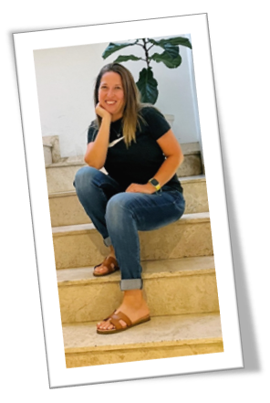

About Vanessa Aguirre
Vanessa Aguirre (my wife) is a passionate individual who finds fulfillment in helping others learn and grow. She is deeply motivated by seeing the "light bulb go on" when someone grasps a new concept or achieves a goal. Whether it's teaching, assisting with creative projects, or simply offering encouragement, Vanessa takes immense satisfaction in empowering others to reach their full potential.
Outside of her passion for education and personal growth, Vanessa enjoys a variety of hobbies. Photography allows her to capture the beauty in everyday moments, while cooking provides an outlet to experiment with flavors and share delicious meals with loved ones. Reading, particularly science fiction novels by Isaac Asimov, and watching classic horror films like "The Exorcist" and "The Shining" provide escapes into worlds of imagination and suspense.
Vanessa is proud of her personal journey, particularly overcoming their fear of public speaking. Through dedicated practice and a supportive community, she transformed their nervousness into confidence and even discovered a newfound enjoyment in presenting to groups. She aspires to continue learning and growing both personally and professionally, believing that there's always room for improvement.
When it comes to relationships, Vanessa values loyalty, honesty, and support. She considers herself a dedicated and supportive friend, always there for those she cares about. Her philosophy of life is rooted in resilience, believing that setbacks are inevitable but that one's response can shape one's character.
Vanessa's favorite quote, "The only way to do great work is to love what you do," by Steve Jobs, encapsulates her belief in the power of passion. She hopes to make a positive impact in the world through their actions and endeavors, embracing the opportunities for growth and connection that life offers.